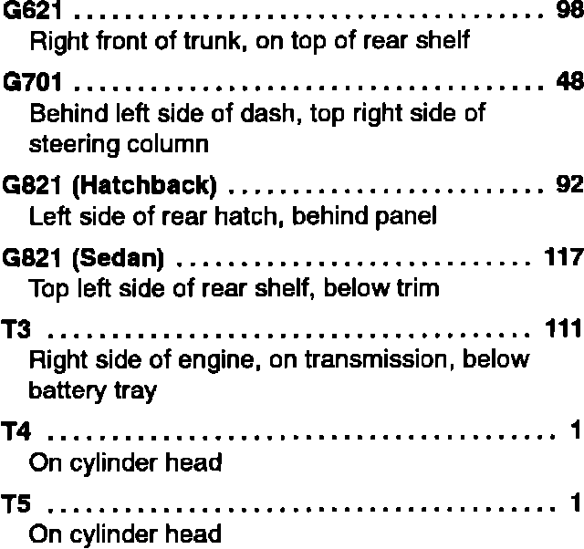

Operation CHARM
: Car repair manuals for everyone.
Home
>>
Acura
>>
1993
>>
Integra L4-1678cc 1.7L DOHC (VTEC) FI
>>
Repair and Diagnosis
>>
Brakes and Traction Control
>>
Brake Warning Indicator
>>
Diagrams
>>
Diagram Information and Instructions
>>
Locations and Photographs
>>
Component Location Index
>>
Power and Ground Distribution
>>
Ground Distribution
>>
G621 Thru T5
G621 Thru T5
Ground Distribution Component Location Index (G621 Thru T5):
